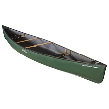
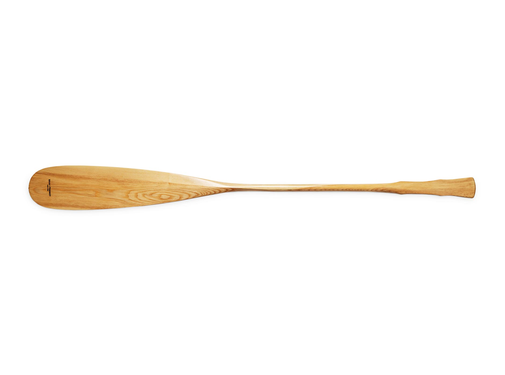
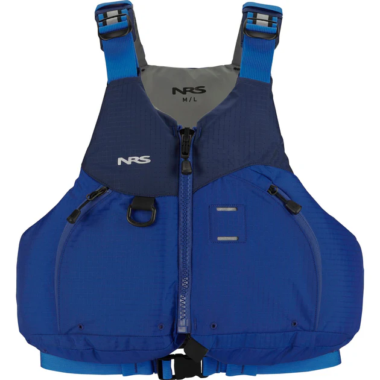
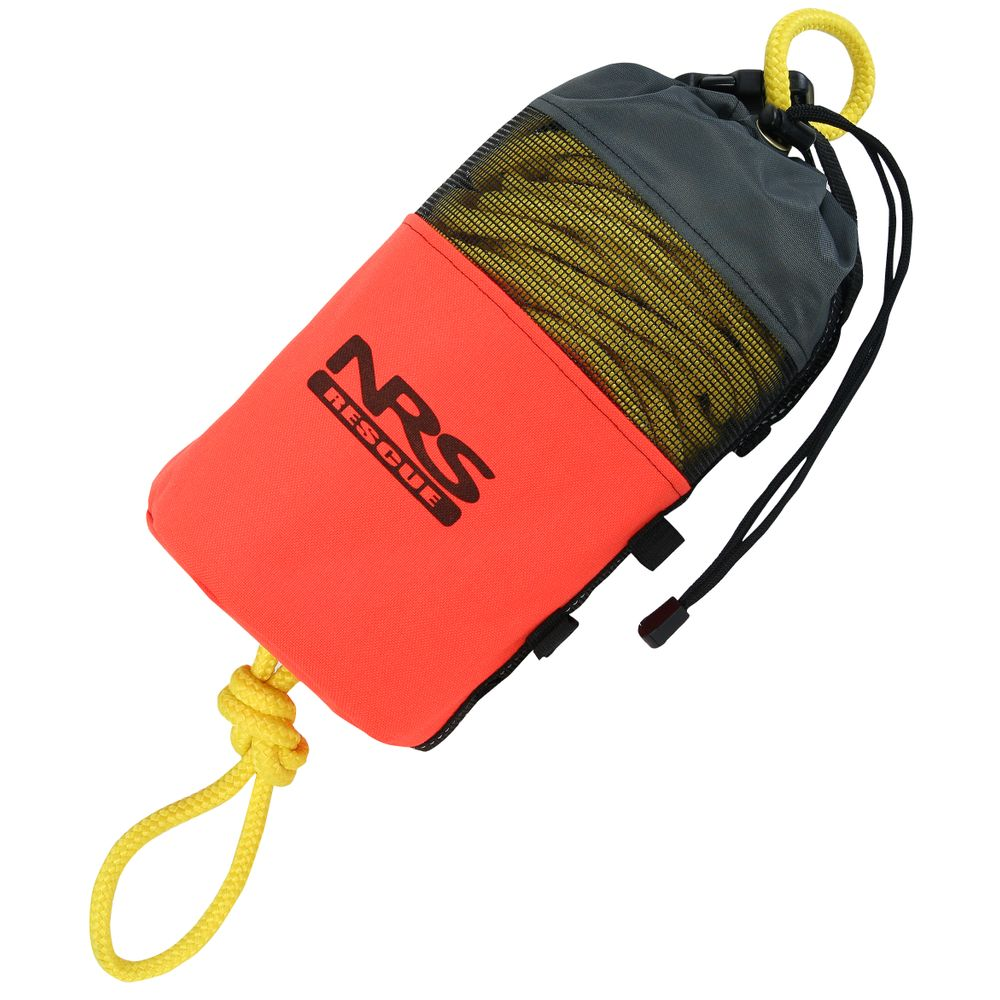

Must Have Equipment
Before heading out to the river or taking on a set of rapids, make sure you have the right gear. Being prepared helps you stay comfortable and safe while canoeing in whitewater. The right equipment makes a big difference, not just for your safety, but for everyone else's saftey and enjoyment too. Come prepared, and you'll have an awesome time on the water!
- White Water Canoes
- Old Town Trippers or Prospectors are ideal.
- Paddles, PFDs with Whistles, and Helmets
- One per person + 1 extra per boat.
- Throw Bags
- One per boat.
- Dry Bags
- Both for personal Gear and the Med-Kit.
| Canoe | Paddle | Helmet | PFD | Throw Bag | Dry Bag |
|---|---|---|---|---|---|
|  |  |  |
 |  |  |
Arriving at a Set
You must scout to find the best route! Scouting is arguably the most important part of white water. Knowing how to pick the best line to run and also when a set is not runnable is very important. With more experience scouting, it will become second nature. However, for your first time in white water it is important to go with someone who knows what to look for! Some dangerous obstacles are tricky to spot.
Here's what to look for:
- Pillows: Rocks that lay above the water. Note them and avoid.
- Sleepers: Rocks under the surface. Harder to see but can be identified slight backwards current flow. Avoid these too.
- Strainer: Trees or branches across river. Very dangerous, always avoid.
- Wave train: Big waves, best part of the river.
- Eddies: Flat water resting spots along the river, often in a river bend.
- If the set is unrunnable, portage around it!
Image below is an example river, the orange shows the best line to follow. The different types of obstacles are labeled.
Here is a video of somebody explaining how to scout a river. Watch the video: White Water Scouting Tips
Flipping on a Set With a Group!
- PEOPLE > EQUIPMENT ALWAYS!
- Get upriver of the boat and the equipment. You don't want to be in the way, and they will float down!
- Passive swim. Flip onto your back with your head upriver and feet lifted up facing down river. Keep your hips up and just float down.
- Tap your helmet to signal you are safe to other people. Swim to shore or grab the throw bag if tossed.
- Once everybody is safe and accounted for, work together to grab and collect the equipment.
It is important to emphasize, flipping is no big deal! It is part of the experience if you go white water canoeing. Personally, I like to think of it as a fun swim after a long day of paddling and working hard. As long as you keep in mind saftey procedures, lay back and enjoy the moving water.
Some Canoeing and Kayaking Sets I've Done
Whitewater kayaking is quite different from canoeing, and can also be more challenging and dangerous. In kayaking, you use a spray skirt that seals the boat, allowing you to roll and navigate through rough rapids without filling your boat with water. This opens the door to tackling much more intense runs. For example, the rapid shown below would be impossible to navigate in a canoe, but it’s an amazing example of how thrilling whitewater can be, so I had to include it! Remember, the same safety principles apply in kayaking as in canoeing: stay safe, stay aware, and have fun out there!